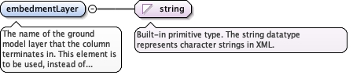

The real-time telemetry record of this construction activity. Aproducer may supply one mixed drilling-and-grouting stream, orseparate records per phase or per equipment system, as for thepileDrivingRecord and pdaRecord of diggs:PileDrivingActivityType;nothing forces a single row set. Repeat for each record.
The sequence position of this record where more than one is present -for example, 1 for a drilling-phase record and 2 for the grouting-phase recordthat follows it during withdrawal.
Source
<element minOccurs="0" maxOccurs="unbounded" name="installationRecord" type="diggs:RIInstallationRecordPropertyType"><annotation><documentation>The real-time telemetry record of this construction activity. A producer may supply one mixed drilling-and-grouting stream, or separate records per phase or per equipment system, as for the pileDrivingRecord and pdaRecord of diggs:PileDrivingActivityType; nothing forces a single row set. Repeat for each record.</documentation></annotation></element>
The achieved reason this column's installation stopped: design depthreached, refusal, or stopped short of the design depth. It is anas-built fact, distinct from the refusal criterion that governs thestop decision: the criterion is a rule and belongs on thespecification side as an acceptance criterion cited by thisactivity, and this element is the outcome that rule produced. Valuescome from the enumerated list, or "Other: xx", where xx is auser-defined term whose meaning differs from every listed value (nota synonym of one).
<element minOccurs="0" name="terminationOutcome" type="diggs:TerminationOutcomeEnumExtType"><annotation><documentation>The achieved reason this column's installation stopped: design depth reached, refusal, or stopped short of the design depth. It is an as-built fact, distinct from the refusal criterion that governs the stop decision: the criterion is a rule and belongs on the specification side as an acceptance criterion cited by this activity, and this element is the outcome that rule produced. Values come from the enumerated list, or "Other: xx", where xx is a user-defined term whose meaning differs from every listed value (not a synonym of one).</documentation></annotation></element>
The as-built embedment of the column toe into the competent(bearing) stratum. In principle it can be derived by crossing thedepth column of the installationRecord coverage, ordiggs:RIColumn/centerLine, against a ground model, but only where aground model is present in the same file, which an inspection andtest plan recording the value at the rig cannot assume. It pairswith the design-side minimum required embedment, an acceptancecriterion.
<element minOccurs="0" name="toeEmbedment" type="diggs:LengthMeasureType"><annotation><documentation>The as-built embedment of the column toe into the competent (bearing) stratum. In principle it can be derived by crossing the depth column of the installationRecord coverage, or diggs:RIColumn/centerLine, against a ground model, but only where a ground model is present in the same file, which an inspection and test plan recording the value at the rig cannot assume. It pairs with the design-side minimum required embedment, an acceptance criterion.</documentation></annotation></element>
The name of the ground model layer that the column terminates in. This element is to be used, instead of embedmentLayerRef, where a GeoUnitSystem used to represent the ground model is not reachable from this instance, or where a formal ground model was not developed.
Diagram

Type
string
Properties
content
simple
Source
<element name="embedmentLayer" type="string"><annotation><documentation>The name of the ground model layer that the column terminates in. This element is to be used, instead of embedmentLayerRef, where a GeoUnitSystem used to represent the ground model is not reachable from this instance, or where a formal ground model was not developed.</documentation></annotation></element>
An xlink:href pointer to the GeoUnitObservation layer from the ground model where termination occurred. Use of this element assumes that the GeoUnitSystem that represents the ground model for this site is reachable from this instance.
The gml:identifier value of the referenced feature, as a fully qualifiedvalue. It gives an alternative to the gml:id in xlink:href for findingthe referenced feature, mainly to reference a feature by a globallyunique identifier and where naming conflicts occur with gml:id whenaccessing data in external files.
<element name="embedmentLayerRef" type="diggs:FeatureReferenceType"><annotation><appinfo source="urn:x-gml:targetElement">diggs:GeoUnitObservation</appinfo><documentation>An xlink:href pointer to the GeoUnitObservation layer from the ground model where termination occurred. Use of this element assumes that the GeoUnitSystem that represents the ground model for this site is reachable from this instance.</documentation></annotation></element>
How the ground was handled during this installation activity: fulldisplacement, partial displacement or replacement. It is distinctfrom diggs:RIColumnType/columnType: columnType names the technique(bored, driven, vibro-driven, drilled displacement and so on), andthis names the displacement behavior of that technique, whether itpushes soil aside, removes it, or something between, which governsthe spoil, the ground disturbance and the quality-control data therig produces. The same family is also stated on the column itself,on diggs:RIColumnType and diggs:RIColumnSpecificationType, where itis constrained against columnType by conditionalElementXpath; thiselement records the same fact from the point of view of theactivity, for the case where the installation is logged as anactivity rather than read off the column. Values come from theenumerated list, or "Other: xx", where xx is a user-defined termwhose meaning differs from every listed value (not a synonym ofone).
<element minOccurs="0" name="riInstallationMethod" type="diggs:RIInstallationMethodEnumExtType"><annotation><documentation>How the ground was handled during this installation activity: full displacement, partial displacement or replacement. It is distinct from diggs:RIColumnType/columnType: columnType names the technique (bored, driven, vibro-driven, drilled displacement and so on), and this names the displacement behavior of that technique, whether it pushes soil aside, removes it, or something between, which governs the spoil, the ground disturbance and the quality-control data the rig produces. The same family is also stated on the column itself, on diggs:RIColumnType and diggs:RIColumnSpecificationType, where it is constrained against columnType by conditionalElementXpath; this element records the same fact from the point of view of the activity, for the case where the installation is logged as an activity rather than read off the column. Values come from the enumerated list, or "Other: xx", where xx is a user-defined term whose meaning differs from every listed value (not a synonym of one).</documentation></annotation></element>
The corrective action taken where in-progress monitoring found thatthe grout level in the column had dropped below the expected level(an uncovered column condition): topping off, or re-drilling andre-grouting the column. It is the outcome of a site check, not thecheck itself: where the depth-indexed level reading that triggeredthe action is also logged, it travels through installationRecordlike any other rig telemetry (gr_inj_properties.xml#grout_level), asterminationOutcome relates to the refusal criterion that triggersit. Values come from the enumerated list, or "Other: xx", where xxis a user-defined term whose meaning differs from every listed value(not a synonym of one).
<element minOccurs="0" name="groutLevelCorrectiveAction" type="diggs:GroutLevelCorrectiveActionEnumExtType"><annotation><documentation>The corrective action taken where in-progress monitoring found that the grout level in the column had dropped below the expected level (an uncovered column condition): topping off, or re-drilling and re-grouting the column. It is the outcome of a site check, not the check itself: where the depth-indexed level reading that triggered the action is also logged, it travels through installationRecord like any other rig telemetry (gr_inj_properties.xml#grout_level), as terminationOutcome relates to the refusal criterion that triggers it. Values come from the enumerated list, or "Other: xx", where xx is a user-defined term whose meaning differs from every listed value (not a synonym of one).</documentation></annotation></element>
Database handle for the object. It is of XML type ID, so is constrained to beunique in the XML document within which it occurs. An external identifier for the object inthe form of a URI may be constructed using standard XML and XPointer methods. This is doneby concatenating the URI for the document, a fragment separator, and the value of the idattribute.
Source
<complexType name="RIColumnConstructionType"><complexContent><extension base="diggs:AbstractConstructionActivityType"><sequence><element minOccurs="0" maxOccurs="unbounded" name="installationRecord" type="diggs:RIInstallationRecordPropertyType"><annotation><documentation>The real-time telemetry record of this construction activity. A producer may supply one mixed drilling-and-grouting stream, or separate records per phase or per equipment system, as for the pileDrivingRecord and pdaRecord of diggs:PileDrivingActivityType; nothing forces a single row set. Repeat for each record.</documentation></annotation></element><element minOccurs="0" name="terminationOutcome" type="diggs:TerminationOutcomeEnumExtType"><annotation><documentation>The achieved reason this column's installation stopped: design depth reached, refusal, or stopped short of the design depth. It is an as-built fact, distinct from the refusal criterion that governs the stop decision: the criterion is a rule and belongs on the specification side as an acceptance criterion cited by this activity, and this element is the outcome that rule produced. Values come from the enumerated list, or "Other: xx", where xx is a user-defined term whose meaning differs from every listed value (not a synonym of one).</documentation></annotation></element><element minOccurs="0" name="toeEmbedment" type="diggs:LengthMeasureType"><annotation><documentation>The as-built embedment of the column toe into the competent (bearing) stratum. In principle it can be derived by crossing the depth column of the installationRecord coverage, or diggs:RIColumn/centerLine, against a ground model, but only where a ground model is present in the same file, which an inspection and test plan recording the value at the rig cannot assume. It pairs with the design-side minimum required embedment, an acceptance criterion.</documentation></annotation></element><choice minOccurs="0"><element name="embedmentLayer" type="string"><annotation><documentation>The name of the ground model layer that the column terminates in. This element is to be used, instead of embedmentLayerRef, where a GeoUnitSystem used to represent the ground model is not reachable from this instance, or where a formal ground model was not developed.</documentation></annotation></element><element name="embedmentLayerRef" type="diggs:FeatureReferenceType"><annotation><appinfo source="urn:x-gml:targetElement">diggs:GeoUnitObservation</appinfo><documentation>An xlink:href pointer to the GeoUnitObservation layer from the ground model where termination occurred. Use of this element assumes that the GeoUnitSystem that represents the ground model for this site is reachable from this instance.</documentation></annotation></element></choice><element minOccurs="0" name="riInstallationMethod" type="diggs:RIInstallationMethodEnumExtType"><annotation><documentation>How the ground was handled during this installation activity: full displacement, partial displacement or replacement. It is distinct from diggs:RIColumnType/columnType: columnType names the technique (bored, driven, vibro-driven, drilled displacement and so on), and this names the displacement behavior of that technique, whether it pushes soil aside, removes it, or something between, which governs the spoil, the ground disturbance and the quality-control data the rig produces. The same family is also stated on the column itself, on diggs:RIColumnType and diggs:RIColumnSpecificationType, where it is constrained against columnType by conditionalElementXpath; this element records the same fact from the point of view of the activity, for the case where the installation is logged as an activity rather than read off the column. Values come from the enumerated list, or "Other: xx", where xx is a user-defined term whose meaning differs from every listed value (not a synonym of one).</documentation></annotation></element><element minOccurs="0" name="groutLevelCorrectiveAction" type="diggs:GroutLevelCorrectiveActionEnumExtType"><annotation><documentation>The corrective action taken where in-progress monitoring found that the grout level in the column had dropped below the expected level (an uncovered column condition): topping off, or re-drilling and re-grouting the column. It is the outcome of a site check, not the check itself: where the depth-indexed level reading that triggered the action is also logged, it travels through installationRecord like any other rig telemetry (gr_inj_properties.xml#grout_level), as terminationOutcome relates to the refusal criterion that triggers it. Values come from the enumerated list, or "Other: xx", where xx is a user-defined term whose meaning differs from every listed value (not a synonym of one).</documentation></annotation></element></sequence></extension></complexContent></complexType>